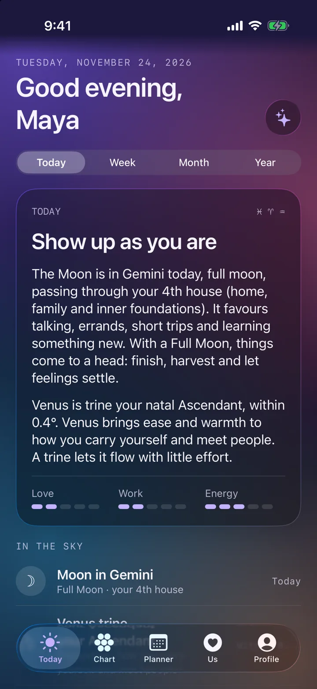
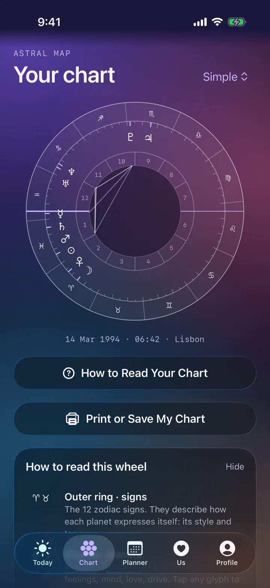
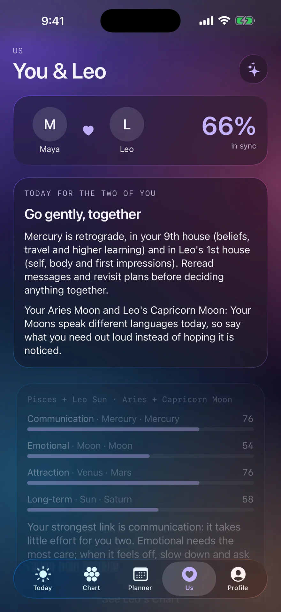
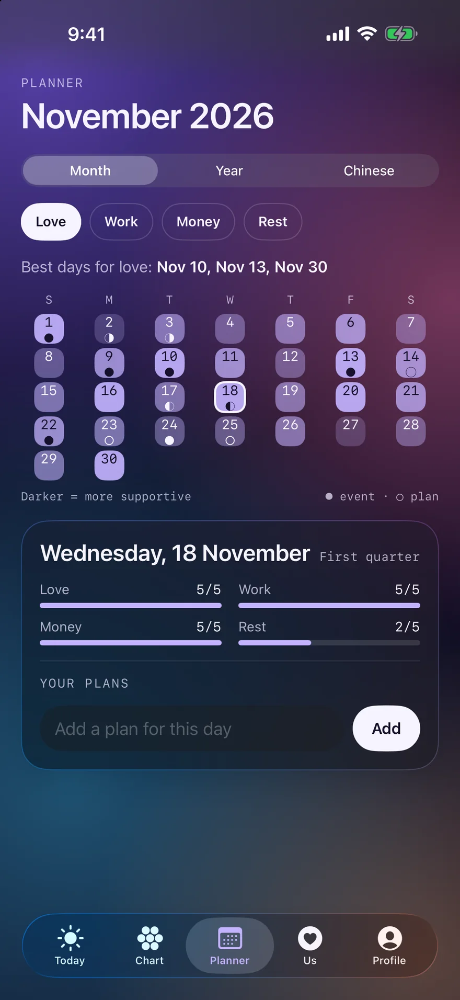
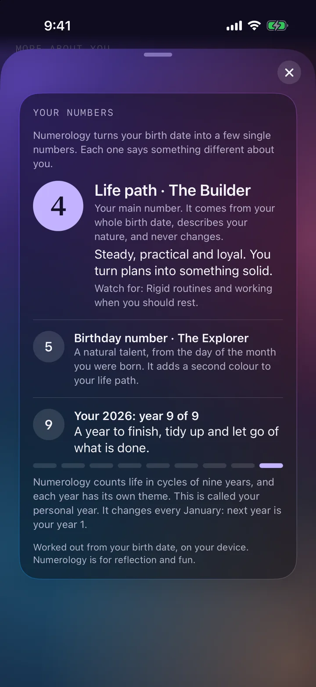

The sky on the day you were born.
Zodiary works out where every planet really was, draws your chart, and explains it in plain words. Then it reads the sky for your day, week, month and year.
The sky right now
- Fire signs
- Earth signs
- Air signs
- Water signs
Planets are shown for noon on that day. The app uses your exact time and place, which also gives your rising sign.
Coming up in the sky
Worked out a moment ago from the same astronomy the app uses.
What you open each morning





What stays on your phone, and what travels
Stays on your phone
- Your name and birth details
- Your partner's details
- Your diary notes and moods
- Your plans
Sent, and where
- The place you search for
- Apple Maps
- A question for the astrologer
- Your calculated chart and the question, through our server to OpenAI. Never your name.
- A month in review
- That month's diary notes, only when you ask for it.
- Usage statistics
- Anonymous, and you can switch them off.
Not in the app at all
- Ads
- Tracking
- An account or password
What is exact, and what is not
Astrology is not science, and we will not pretend it is. Zodiary is for reflection: a way to look at your day with a little more attention.
The part we can be exact about is the sky. Planet positions are calculated with Astronomy Engine, to about one sixtieth of a degree, from the date, time and place you give.
Today's reading is free. Zodiary Pro opens the week, month and year, your partner, the planner, the diary and the astrologer.
Open your first page.
Zodiary is coming to iPhone. Send us a note and we will write back on launch day.
Tell me at launch